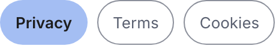
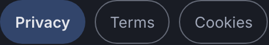

Atom
Document switch
A row of pill links that moves between the three legal documents. Segmented navigation, not a toggle.
Anatomy
.wf-switchthe row, wrapping on a narrow screen.wf-switch aone document: a pill with a 3:1 boundary.wf-switch a.onthe document being read, with the soft accent fill
Variants and sizes
State
Two: the current document and the others. Exactly one is current at a time.
rest
another document
current
the one being read
The empty cells, and why they are empty
No size axis and no emphasis axis.
When to use it
The legal page, and only there. It is one screen, and it is in the system anyway because it is interactive with a state of its own: left on the screen, its states would be invented again at the roll-out, differently.
The rule, and the anti rule
Do this. Use it when a person is moving between documents that are peers. Every option stays visible, so the person can see the whole set.
Not this, use App bar instead. Do not use it to switch a view inside one page. Moving between the sections of the product is the App bar.
States
This component was called Switch in the stage 07 inventory and listed as a form control with the states on and off. The product has no toggle switch anywhere. It was renamed at step 2 and the form control exception that let it in was withdrawn, because it does not apply to a navigation.
One delta from the family. Each pair is the light theme on the left and the dark theme on the right, captured from the live component on this page, not drawn. They are re-taken by the check at step 9, which fails on a byte shift.


currentThe named difference: the current document takes the soft accent fill and a strong weight, the same answer the Chip gives, because both are saying "this one" inside a row of peersRe-take these with node scratchpad/states.js /tmp/jobs.json against a local server on port 8931.
Technical
| Level | 1, atom |
|---|---|
| File | design/system/components/switch.css |
| Roles it reads | --bg-accent-soft, --line-control, --text-hover, --text-primary, --text-secondary |
| In the product | 1 of 99 screens |
| In colour | 0 screens: none yet, it waits for the roll-out at stage 12 |
Markup to copy
<nav class="wf-switch" aria-label="Legal documents"><a class="on" href="#">Privacy</a><a href="#">Terms</a><a href="#">Cookies</a></nav>